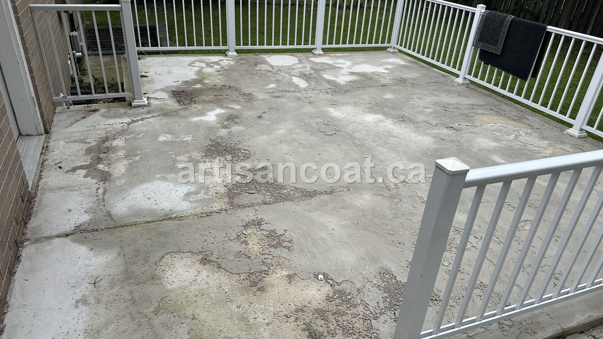
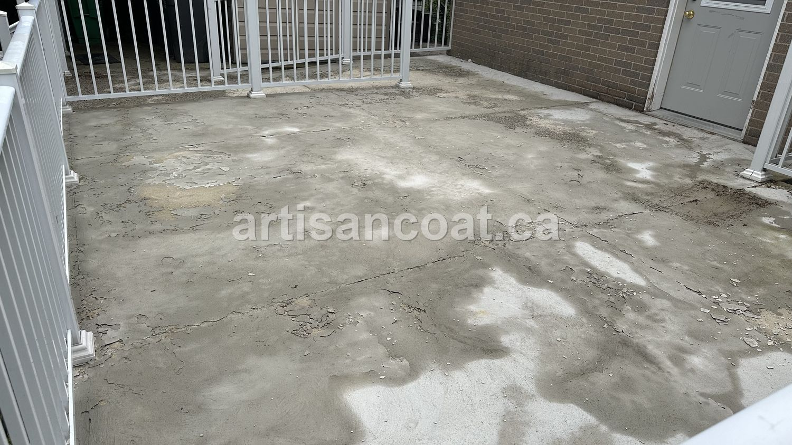
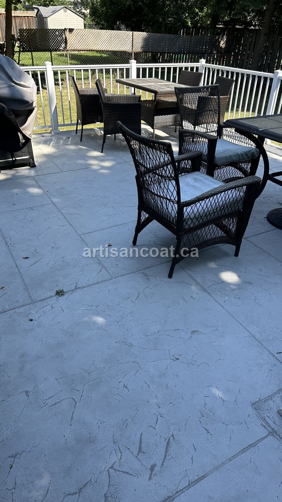
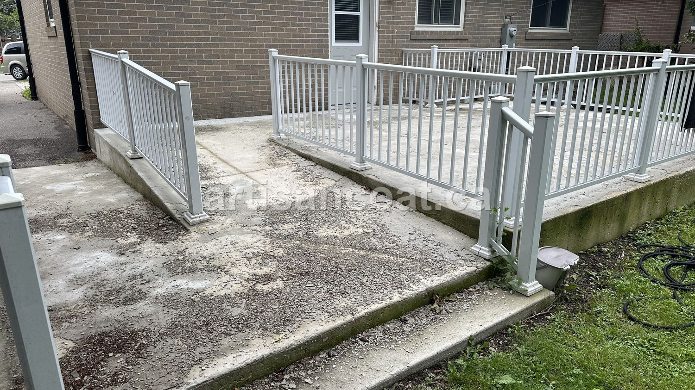
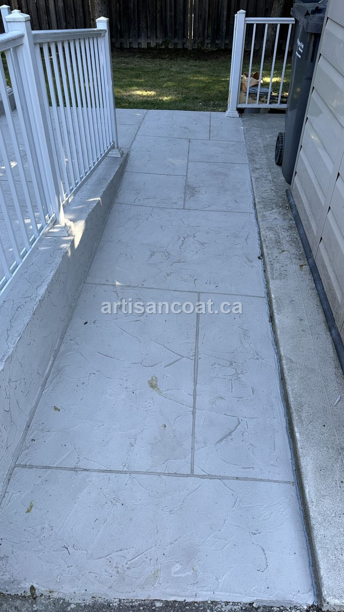

Some of the most satisfying jobs we take on aren't fresh surfaces — they're rescues. A homeowner pays good money to have their concrete resurfaced, it looks great for a few weeks, and then it starts coming apart. By the time they call us, they're frustrated, out of pocket, and understandably nervous about hiring anyone again.
That's exactly the situation on this GTA patio. The raised deck had been resurfaced with a decorative coating by another contractor not long before — and the entire top surface had already delaminated and peeled off, leaving a patchy, blotchy mess of bare concrete and loose material.
What Went Wrong
When we assessed it, the cause was clear and, unfortunately, common: the previous contractor didn't use the proper method or the right material. The decorative topping was applied over concrete that was never properly ground and profiled first, so it had nothing to truly grip. On top of that, the product they used simply wasn't up to the job.
The result is what you see below — a coating that looked fine on day one and then let go completely. Once water gets under a poorly-bonded surface and our freeze-thaw cycles kick in, the topping doesn't stand a chance. It lifts, flakes, and peels away in sheets.


"There's no coating on earth that will hold if the prep is wrong. You can't shortcut the grind and expect the finish to last — the surface underneath is the whole job."
Our Fix: Grind It Down and Rebuild It Right
There was no patching our way out of this one. When a coating has failed this completely, the only proper fix is to take it all the way back to sound concrete and start over — correctly this time. Here's what that involved:
- Grind everything off. We mechanically ground the entire surface to remove every bit of the failed coating and loose material, right down to solid, sound concrete. This is the step that was skipped the first time around.
- Repair and re-profile. With the failed topping gone, we repaired the surface and opened up a clean, properly profiled base — giving the new overlay something real to bond to.
- Resurface properly. We then applied our decorative concrete overlay with the correct method and the right materials, finishing it in a clean slate-look pattern and sealing it for the GTA's freeze-thaw and salt.
Grinding isn't an optional extra — it's the foundation of the entire job. It removes the failed material and profiles the concrete so the new overlay physically keys into the surface. Skip it, or rush it, and you get exactly what the last contractor delivered: a finish that peels off in a matter of weeks. The prep is the product.
The Result
The same deck that was a peeling, blotchy embarrassment is now a clean, uniform, slate-look patio the homeowner can actually furnish and enjoy. Because it was ground down and bonded properly this time, it isn't going anywhere — and it's sealed to handle Canadian winters instead of falling apart in them.

The walkway leading off the deck got the same treatment — stripped, repaired, and resurfaced into one continuous, clean finish.


The Lesson for Homeowners
If your resurfaced concrete is already peeling, flaking, or lifting, it's almost never the design that failed — it's the prep. The good news is that a failed coating can usually be ground off and done properly without replacing the slab. The better news is that you can avoid the whole ordeal by asking one question up front: "How do you prepare the surface before coating it?" If the answer doesn't include grinding and proper materials, keep looking.
We fix jobs like this regularly — it's a big part of what we do. If you're staring at a surface that another contractor got wrong, that's exactly the kind of rescue we're happy to take on.
Frequently Asked Questions
Why did my decorative concrete coating peel off?
The most common reason a decorative coating or overlay lifts, flakes, or peels off is improper surface preparation and the wrong material. If the existing concrete isn't ground and profiled correctly, or a product that isn't rated for exterior freeze-thaw is used, the topping never truly bonds. It may look fine for a season, then the whole top surface delaminates — exactly what happened on this project before we were called in.
Can a failed concrete coating be fixed, or does it need replacing?
In most cases it can be fixed without replacing the slab. We grind off all of the failed coating down to sound concrete, repair any damage, then re-profile and resurface with a properly bonded decorative overlay. Full slab replacement is only needed when the underlying concrete itself has failed structurally, which is rare — usually the slab is fine and only the previous contractor's topping was the problem.
What does grinding down a failed coating involve?
We mechanically grind the entire surface to remove the delaminating coating and open up the concrete to a clean, sound profile. This is the step the original contractor skipped. Proper grinding gives the new overlay something to grip, which is what makes the finish actually last. Once the surface is ground and repaired, we apply the new decorative concrete and seal it for GTA weather.
How do I avoid hiring a contractor whose coating will fail?
Ask exactly how they prepare the surface before coating. A proper answer includes mechanical grinding or profiling, repairing existing damage, and using an exterior-rated, polymer-modified system sealed for freeze-thaw. If a contractor can't explain their prep, or quotes a price that seems too good to be true, that's usually where corners get cut — and prep is the corner that causes coatings to peel.
Do you fix other contractors' failed concrete work?
Yes — it's a big part of what we do. We regularly get called to fix resurfacing and coating jobs that failed because prep was skipped or the wrong products were used. Send a few photos of your surface to 416-889-8273 on WhatsApp and we'll tell you honestly whether it can be ground down and resurfaced, and what it would cost.